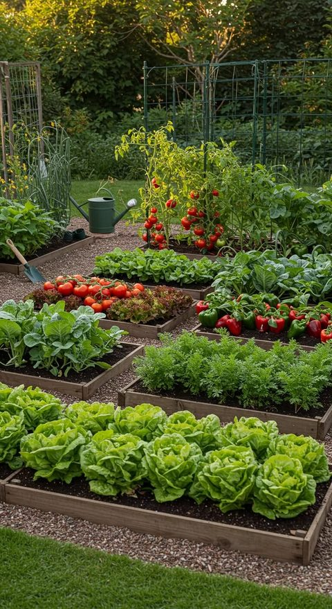

5 Easy Vegetables to Grow at Home
Discover simple vegetables you can grow in small urban gardens, including spinach, tomatoes, and herbs.

Discover simple vegetables you can grow in small urban gardens, including spinach, tomatoes, and herbs.
Learn how to compost kitchen scraps and garden waste to create nutrient-rich soil for your plants.
Sarah has been volunteering with GreenReach for two years, teaching sustainable gardening practices to community members.